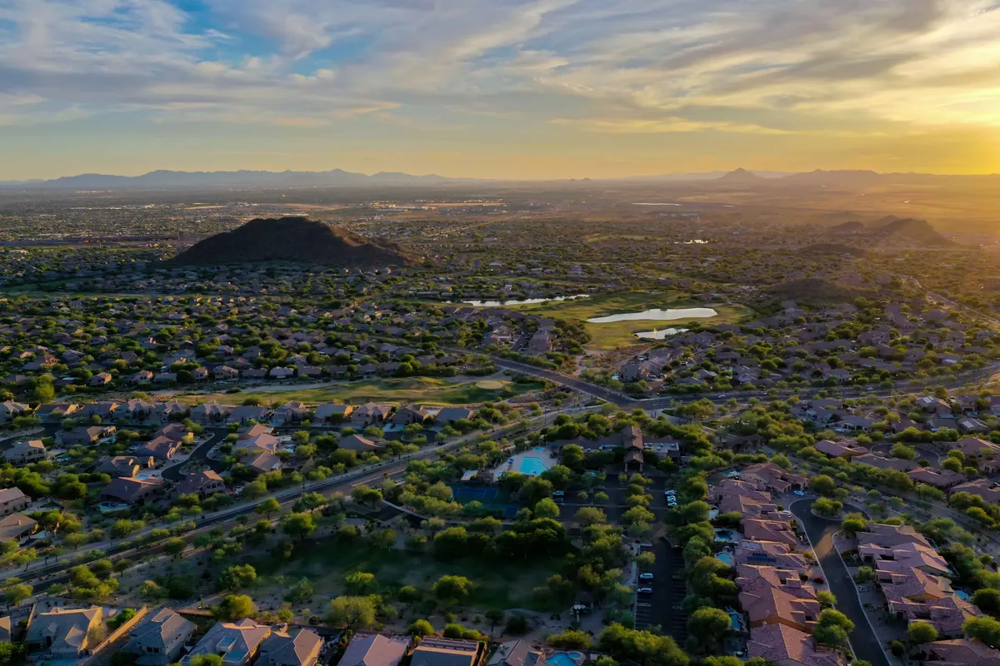

Practical guidance on buying, selling, and living in Scottsdale, Arcadia, Arcadia Lite, and Central Phoenix.
How assumable mortgages work in Arizona: which FHA and VA loans qualify, credit approval, the 0.5% VA funding fee, fee caps, and what buyers and sellers should know.
Read ArticleYes, Arizona is a community property state. What that means for a home you buy while married, how to take title, survivorship, divorce and the tax basis step-up.
Read ArticleWho pays title insurance in Arizona? Under the standard resale contract, the seller pays the buyer's owner's policy and the buyer pays the lender's policy. Here's why.
Read ArticleVeterans Day 2026 is Wed., Nov. 11. The Phoenix parade's new Third Street route, Scottsdale-area events, city closures and Arizona property tax help for veterans.
Read ArticleHow to remove PMI: request cancellation at 80% of original value, automatic removal at 78%, using a new appraisal, and how FHA mortgage insurance differs.
Read ArticleArizona's senior property tax freeze explained: who qualifies for Maricopa County Senior Valuation Protection, 2026 income limits, deadlines and what happens if you sell.
Read ArticleContingent vs. pending in Arizona: what UCB, CCBS and Pending mean in the ARMLS listing system, and whether you can still make an offer or a backup offer.
Read ArticleMoving to Arizona from California? When you become a resident, how to get your Arizona driver license and registration, and how Arizona property tax differs from Prop 13.
Read ArticleWhat is a beneficiary deed in Arizona? How A.R.S. 33-405 lets you pass your home at death, how to revoke one, and how it compares with a living trust.
Read ArticleShould you buy a house in cash or with a mortgage? Weigh 7.32% rates, liquidity, offer strength and Fannie Mae's delayed financing option for Scottsdale and Phoenix buyers.
Read ArticleScottsdale weather in November: normal highs near 75°F, lows near 51°F and under an inch of rain, per NOAA. What early and late November feel like, plus December.
Read ArticleBuying a second home in Arizona? Fannie Mae's second-home loan rules, how Maricopa County taxes a secondary home, rental registration and IRS rental-day rules.
Read ArticleHow much earnest money is typical in Arizona? It's negotiated, not set. Where your deposit goes, when it's refundable and how lenders treat it.
Read ArticleSell first or buy first in Arizona? How home sale contingencies work, when lenders count both payments, and how to time a move with rates at 7.32%.
Read ArticleSell or rent your Arizona house? Weigh the IRS 2-of-5-year exclusion, assessor rental registration, the end of city rental tax and landlord rules first.
Read ArticleIs Scottsdale part of Phoenix? No. It's its own city, incorporated in 1951, in Maricopa County and the Phoenix metro. What that means for buyers in 2026.
Read ArticleDoes Arizona change clocks on Nov. 1, 2026? No. Arizona stays on Mountain Standard Time year-round, except the Navajo Nation. What shifts is your time gap with every other state.
Read ArticleDoes Arizona tax capital gains on a home sale? Yes, at the flat 2.5% rate, after the federal $250K/$500K exclusion and a 25% Arizona subtraction. Plus SB 1633's fate.
Read ArticleAppraisal came in lower than the purchase price in Arizona? Under the standard contract, buyers get 5 days after notice to cancel and recover earnest money. Here are your options.
Read ArticleHELOC or cash-out refi? With the 30-year rate at 7.32% (Freddie Mac, Oct. 22, 2026), a HELOC lets Arizona owners tap equity without replacing a lower-rate mortgage.
Read ArticleSelling in Arizona? What stays with the house under the standard contract, from drapes and TV mounts to solar and pool gear, plus how to exclude items.
Read ArticleDoes Arizona have a homestead exemption? Yes: it protects up to $400,000 of home equity from most creditors (inflation-adjusted, about $437,600 for 2026). It is not a property tax break.
Read ArticleSRP winter prices start with the November 2026 billing cycle. On-peak hours, super off-peak 8 a.m.-3 p.m., per-kWh prices by plan and what Scottsdale homeowners should know.
Read ArticleThings to do in Scottsdale in November 2026: Canal Convergence Nov. 6-15, Scottsdale Polo Nov. 7, Kierland art and wine Nov. 7-8, and holiday tree lightings Nov. 28.
Read ArticleHow much is a home inspection in Arizona? Most cost $300-$600 in 2026, with termite, pool and sewer scope add-ons extra. Costs by home size, the 10-day window and the BINSR.
Read ArticleWhen are Maricopa County property taxes due? The first half of 2026 taxes becomes delinquent after 5 p.m. Nov. 2. Due dates, the 16% interest rule and how to avoid it.
Read ArticleAre mortgage rates going down? Freddie Mac's 30-year average dipped to 7.32% on Oct. 22, 2026, but forecasts stay above 7%. What it means for Scottsdale buyers.
Read ArticleHow much is homeowners insurance in Arizona? Recent studies put the average near $2,200 to $2,400 a year. Why premiums rose and how Scottsdale buyers can plan.
Read ArticleFountain Hills vs. Scottsdale: a $893,500 YTD median vs. $1.25M, Dark Sky skies, the fountain schedule and what Fountain Hills, AZ 85268 living looks like in 2026.
Read ArticleParadise Valley vs. Scottsdale: PV is its own town with no town property tax and one-acre zoning. Its Sept. 2026 median was $4.19M vs. $1.2M in Scottsdale.
Read ArticleArizona HOA laws 2026: seven new laws took effect Sept. 12, from a duty to act reasonably to shade structures, foreclosure limits and bigger resale disclosures.
Read ArticleScottsdale short-term rental rules 2026: a $250 annual city license, $500K liability coverage, neighbor notice, and Ordinance 4720's 24/7 contact rule.
Read ArticleHow long does it take to close on a house in Arizona? Purchase loans averaged 36.8 days to close (ICE). The 10-day inspection period and escrow, step by step.
Read ArticleArcadia townhomes: The Arcadian's final phase offers 15 homes from the $500Ks to $900Ks near 32nd St & Indian School. Where it sits on the Arcadia map.
Read ArticleIs downtown Phoenix a good place to live? 25,000+ residents, light rail, 255+ restaurants, a new $60M YMCA coming, and the trade-offs to weigh in 2026.
Read ArticleArizona's 2026 conforming loan limit in Maricopa County is $832,750; anything above is a jumbo loan. FHA's limit is $557,750. What it means in Scottsdale.
Read ArticleWhat it costs to sell a house in Arizona in 2026: no transfer tax, who pays title and escrow, HOA fee caps, prorated taxes and the home-sale tax exclusion.
Read ArticleScottsdale water rebates 2026: grass removal pays $2/sq ft up to $5,000 (apply by Oct 31), pool removal up to $1,500, smart controllers up to $250.
Read ArticleIs Kierland in Phoenix or Scottsdale? City of Phoenix land, Scottsdale 85254 addresses. Plus the 494-unit golf course plan and hearing dates.
Read ArticleCost of living in Scottsdale AZ 2026: ~15% above national average, housing ~42% higher. Utilities, rent and what to budget.
Read ArticleArizona first-time home buyer programs 2026: Arizona is Home and Home Plus DPA, income limits, FICO and how to qualify.
Read ArticlePending sales fell 39.3% in Maricopa County while Scottsdale's median rose 4.3% — what it means for buyers and sellers.
Read Article2-1, 3-2-1 and permanent buydowns vs. a price cut — how to decide based on your payment, cash and timeline.
Read ArticleA buyer's framework for comparing membership costs, waitlists, and lifestyle across Scottsdale's top golf enclaves.
Read ArticleBoundaries, price gaps, and lifestyle nuances between two of Phoenix's most requested zip codes.
Read ArticleWhat buyers pay a premium for in Willo, Encanto-Palmcroft, and Coronado — and how to prepare a historic listing.
Read ArticleLoan pre-approval, competitive offers, and what to expect from your first showing to closing day.
Read ArticleInside the 85250 corridor: the dog park, the inclusive playground, and why this pocket of Scottsdale keeps selling fast. More at Chaparral Park Homes.
Read ArticleWhat out-of-state buyers should know about climate, commute, schools, and choosing the right neighborhood.
Read Article